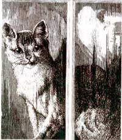
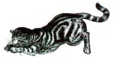

COUNTRY VET
IT LOOKS LIKE WINTER AROUND HERE-THE sky is gunmetal gray, the trees bare outlines against it-and I'm snuggled into the couch with blankets and my Australian Shepherd, Spencer, at my feet. Despite the contrary evidence outside the door, I've got spring on my mind, and pen, paper, and catalog in hand: It's time for me to plan my garden. Since you're probably doing the same thing, you should know that there are many plants you can grow that are natural flea repellents.
Matter of fact, you're probably familiar with the some of the best insect guards of the plant world-marigolds, nasturtiums, and members of the garlic family are well known to organic gardeners as natural de-buggers. Not as well known but equally effective are chrysanthemums (they contain a chemical that deadens the nerves of fleas) and pyrethrum (an extract of the mum that is used as a natural flea powder). Mint and cedar, are also excellent flea deterrents. When dried and added to the pets bedding, or steeped and used as a final rinse at bath time, they help to deter fleas and ticks from thinking that your dog is an attractive host. These plants create a natural pest blockade when grown around your house and garden.
When planning your garden, include plants to help the insides of your animals as well. Catnip, a member of the mint family, is ridiculously easy to grow and is a cheap giggle for cat owners, instantly turning your tabby into a purring mass of groveling puss.
Both canines and cats love dog or couch grass: It works as an intestinal cleanser and they will seek it out if their stomachs are upset. Parsley is high in iron as well as being a natural breath deodorizer, and an ill pooch will seek out garlic when it doesn't feel well. You may even want to plant a special "pet garden" for your animals.
Though it's a bit premature to talk about in these bleak months, remember that adding some organic carrots, corn, or potatoes to your pet's food will insure variety as well as valuable nutrients. Happy Planting!
Q. In about a month's time, our family is moving and I'm concerned about how our cat is going to adjust. He's a neutered six-year-old and he's never lived anywhere but here. What can we do to make sure that he doesn't get lost?
A. It's funny-I recently had the opportunity to go backstage at the Big Apple Circus. In addition to seeing all the lions, tigers, and bears (oh my), I got a chance to speak to a few of the trainers.
One thing that struck me was that many of the performers bring their pets on the road with them. Wherever they stopped, they let their animals out to roam. Don't they get lost? I asked. Aren't you afraid of leaving them behind? No, they answered. The animals never seemed to roam far from home.
I'm not suggesting that you throw caution to the wind and let your cat out the moment you unload the last box from the U-Haul. But don't be that worried. When you first let him out of the house, follow him a little, call him often. Let him know where his food and box are. Reassure him a lot. Generally they don't get lost. Animals have a very good sense of home, and home is where their owner is. If you can, put a tag on your cat's collar with your new address and phone number.
Q. Recently, I awoke in the middle of the night to the sound of what appeared to be my dog choking. He was sort of snorting in through his nose over and over again. He'd stop, then start up again. I was really frightened and so was he. I took him to the vet early the next morning and the vet said she couldn't find anything wrong with him. She said he was fine, and that some dogs just snort. He's done it a couple of times since and it sounds just horrible. Should I find a new vet?
A. From what your letter says, it's my bet that both your dog and your vet are fine. I, too, am the somewhat chagrined owner of a snorting hound. I had a similar occurrence and rushed Spencer to his vet only to find out that he was perfectly healthy.
It seems that some dogs are prone to a spasmodic "in-sneeze." It will appear as if the dog can't breathe, gulping air into his lungs through his nose recurrently. And, as you discovered, "in-sneezing" sounds and looks rather alarming: The dog is frightened, you get frightened, and then the dog gets even more scared. These sneeze seizures can be triggered by excitement but can happen at any time, even when the animal is relaxed.
My vet suggested that Spencer had an allergic reaction. He gave me some Chlortrimetron, urging me to not medicate him if I didn't see any change with the antihistamine. I decided not to give him any and he was fine. I don't know what triggered him, but it hasn't returned. Still, if you find your dog having breathing problems, don't assume that it's nothing. Peace of mind is worth a needless trip to the doc now and again.
Q. My cat, Percy, is nearly an adult and her destructiveness is amazing. She has clawed every piece of furniture in my house to shreds and I'm considering getting her declawed. What do you think?
A. I have to admit, my personal views are against declawing. Cats are nature's most perfect predators and declawing-even the front paws-makes them defenseless.
Like us humans, dogs and cats get tartar and tooth decay, and as they get older may
need tooth extractions.
However, I also support animal owners doing what they need to make peace with their pet. But before you declaw, you might consider some alternatives:
Buy a scratch post. Scent it with catnip and praise your cat when he scratches it. Behavioral training is very difficult with cats because they lack the natural instinct to please their master that dogs have, but it can help. Also, buy one of the sprays on the market that deters scratching by scenting your fine pieces with an odor that cats dislike.
If you have the space and the time, you might think about adding another cat to your household. Some cats scratch not only to shed the old, outer nail but out of boredom, and having another feline around gives them a playmate.
If you decide to go ahead with it, keep in mind that declawing, like any surgical procedure, comes with a slight risk as your cat will be given general anesthesia. Once under, the nails are removed at the germinal claw, then the pad is sutured or bandaged until healed. Your cat will have tender front feet for several days after the operation.
There is much controversy around de-clawing. Some people feel that the risk of surgical complications is not worth it. Some feel that declawed cats can develop a mistrust of their owner and of their vet. Others maintain it is a simple procedure that saves the cat from bearing the burden of the owner's frustration as it naively destroys furniture, rugs, and pillows. Really, the choice is yours, but I urge you not to do it.
Q. What's kennel cough? I'm going away next month and I'm going to have to kennel my dog. Is this something I need to be concerned about?
A. Kennel cough, or Tracheobronchitis, is an infection that affects the respiratory system. It's thought to be caused by the combination of a virus and a bacterium. An airborne disease that spreads easily among dogs-especially dogs under stress-it takes about a week for the symptoms to appear (a dry hacking cough that may be exacerbated by play or pulling on the collar).
Kennel cough is not that serious in and of itself. Usually, the dog can combat it with his own immune system. If it is protracted, or if the animal is uncomfortable, it is easily treated with antibiotics. However, for your peace of mind, you may want to vaccinate your dog with a parainfluenza vaccine (CPI) one to two weeks before boarding.
Q. My husband constantly complains about the odor of my cat's box. I don't have the time to change it everyday. Can you tell me how to get the most from my kitty litter?
A. There are a few things you can do. One, buy a covered cat box. Two, cut down on odor by adding a layer of baking soda when filling your box and sprinkling the litter each time you scoop out the poops.
Cedar is another great natural odor fighter-try mixing it in with the litter. If you can't get it at the pet store, try your local gardening-supply house.
If you opt for the nonorganic box, Ever-clean litter is the best product on the market. Resembling sand, it comes in plastic gallon jugs and balls up when wet. You just scoop out the balls of urine with the poop once a day. It's not cheap, but you only have to change the litter once every three to four months, so it ends up being about the same as conventional litter.
Finally, make sure your cat is healthy and that the food you are putting into him/her is high quality. After all, what you put in affects what comes out.
Q. I know I'm supposed to take care of my dog's and cat's teeth, but I don't know how. Can you tell me about oral hygiene?
A. This is something relatively new to pet owners, but oral hygiene is a really important step in prolonging the healthy life of your pet. Like us humans, dogs and cats get tartar and tooth decay, and as they get older may need tooth extractions. Milk bones, kibbles, rawhide, chew toys, and bones all help, but the rest is up to you.
First, get a pet toothpaste. Petrodex is a really good one and most animals seem to like the taste. Next, let your pet get used to the taste and the idea of an object being stuck in his mouth. Put some paste on your finger and let him lick it off. Then part his lips by gently pulling up on either side of his nose and rubbing your finger on his front teeth. Do this for several days, always praising your animal.
When he's accustomed to that, start to actually work on his teeth. You can purchase one of the pet toothbrushes available on the market. (Never use human toothbrushs, however; they are simply much too abrasive.) If your animal balks at a brush, or is too small, there are also tooth pads that are pre-moistened with paste, or you can simply dab some toothpaste on a gauze pad or Q-tip and use that.
Using a back and forth motion, start scrubbing very gently to get the gunk off his teeth. It's really important to clean the back teeth of your animal since this is where a lot of decay problems lie. Plan on brushing your pet's teeth about once a week; more often if they eat soft food.
Dental hygiene should be a pleasant part of the time you and your animal spend together. One final note: If your animal has really bad mouth odor or dark brown or black spots on the teeth, see a veterinarian dentist. It could mean that your pet needs a professional cleaning.
|
 |
 |
|